Студент: ТУЙИШИМЕ Тьерри
Группа: НКАбд-05-25
1 Цель работы [1](#цель-работы)
3 Выполнение лабораторной работы [2](#выполнение-лабораторной-работы)
5 Ответы на контрольные вопросы [7](#ответы-на-контрольные-вопросы)
Ознакомление с инструментами поиска файлов и фильтрации текстовых данных. Приобретение практических навыков: по управлению процессами (и заданиями), по проверке использования диска и обслуживанию файловых систем.
Вошла в систему под моем имением, открыла терминал и записала в файле file.txt названия файлов, содержащихся в каталоге /etc с помощью ls -lR /etc > file.txt :
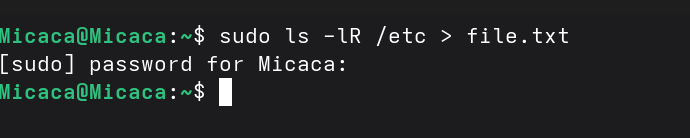
Рис. 1: Запись в файлС помощью head я проверяю ,что в файл записалась названия файлов, содержащихся в каталоге /etc:
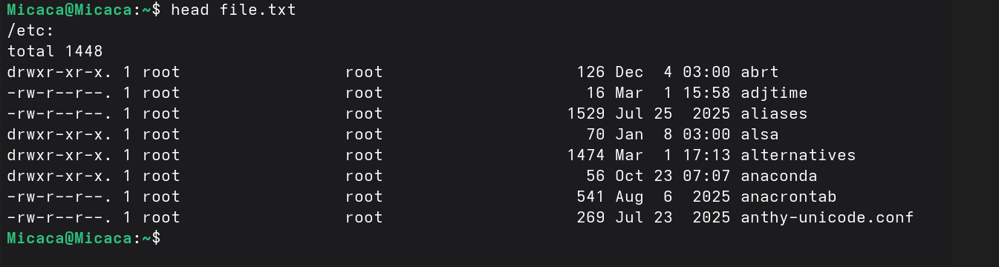
Рис. 2: Первые 8 файлов в file.txtВ file.txt добавляю названия файлов, из домашнего каталога используя ls -lR /etc >> file.txt:
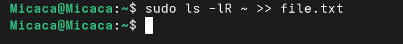
Рис. 3: Добавление файлов из домашнего каталогаВывожу имена всех файлов из file.txt, имеющих расширение .conf с помощью grep:
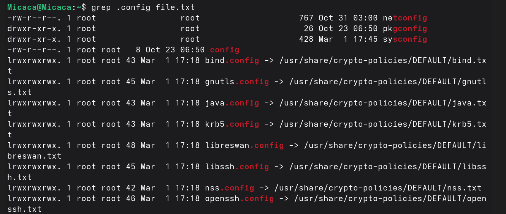
Рис. 4: файлы с расширением .confЗатем запишиу их в новый текстовой файл conf.txt (grep .conf file.txt > conf.txt) и проверяю с помощью head:
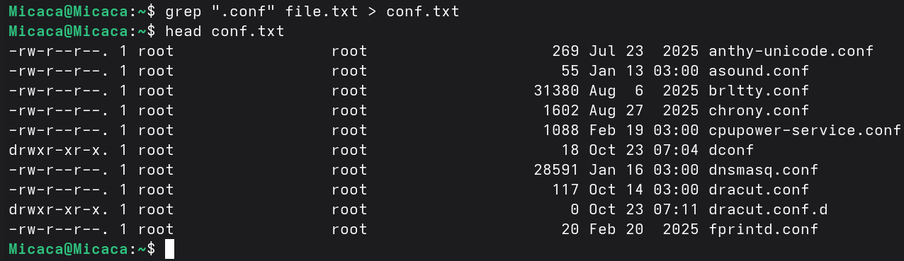
Рис. 5: добавление файлов с расширением .confЧтобы определить, какие файлы в домашнем каталоге имеют имена, начинавшиеся с символа “c”, использую find ~ -name “c” print ; ~ обозначается домашний каталог, -name (имя файлов) ”с” строка символов, определяющая имя файла и print выводит результаты на экране:
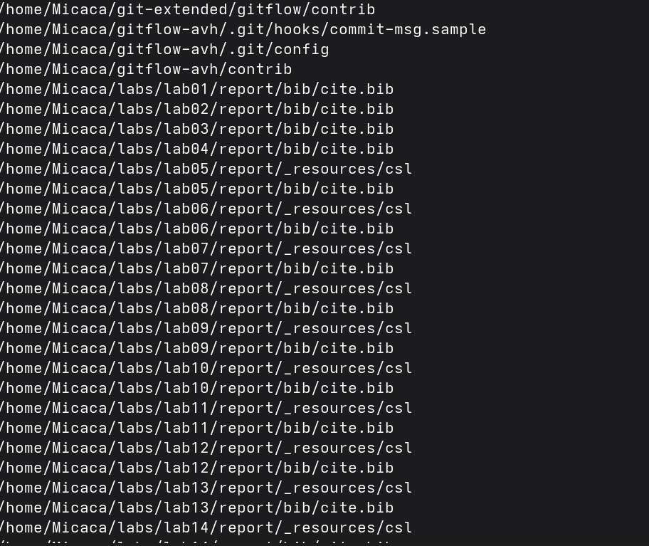
Рис. 6: файлы в домашнем каталоге начинающихся с “с”Также можно это действие выполнить используя ls -lR | grep “c*”
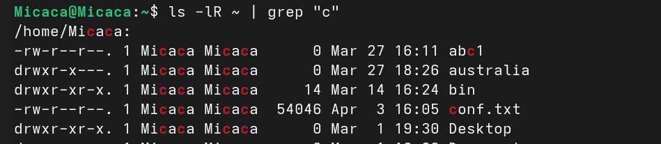
Рис. 7: поиск файла используя grepс помощью find /etc -name “h*” -print, вывожу файлы из каталога /etc, начинающиеся с символа h:
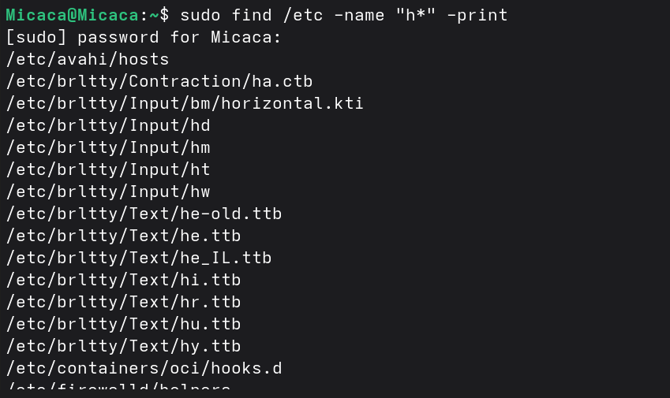
Рис. 8: файлы в etc начинающихся с “h”В фоновом режиме запускаю процесс, который будет записывать в файл ~/logfile файлы, имена которых начинаются с log:
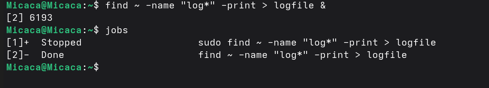
Рис. 9: Создание фонового режимаУдаляю созданный logfile и проверяю:
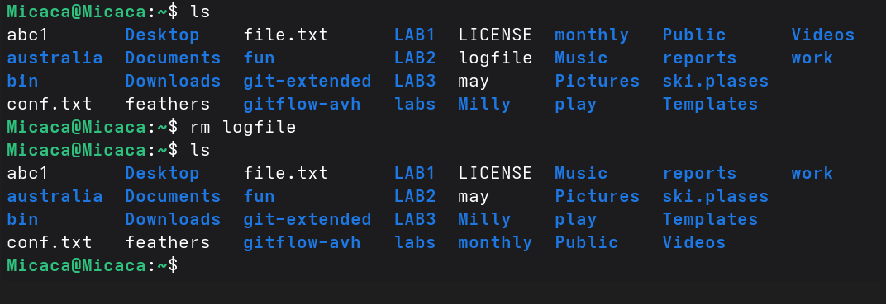
Рис. 10: удаление logfileЗапускаю из консоли в фоновом режиме редактор gedit указывая &:
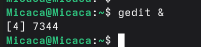
Рис. 11: запуск gedit в фоновом режимеИспользуя команду ps, конвейер и фильтр grep, определяю идентификатор процесса gedit (3576):
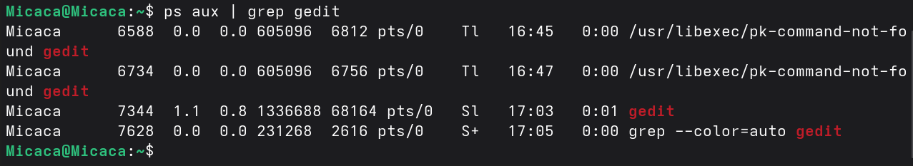
Рис. 12: идентификатор процесса gedit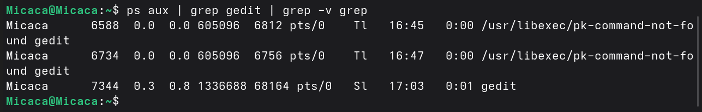
Рис. 13: Другой способ нахождение идентификатора процессаС помощью man прочитала справку команды kill и использую её для завершения процесса gedit:
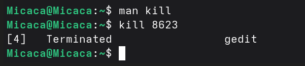
Рис. 14: завершения процесса geditС помощью man прочитала справку команд df и du:
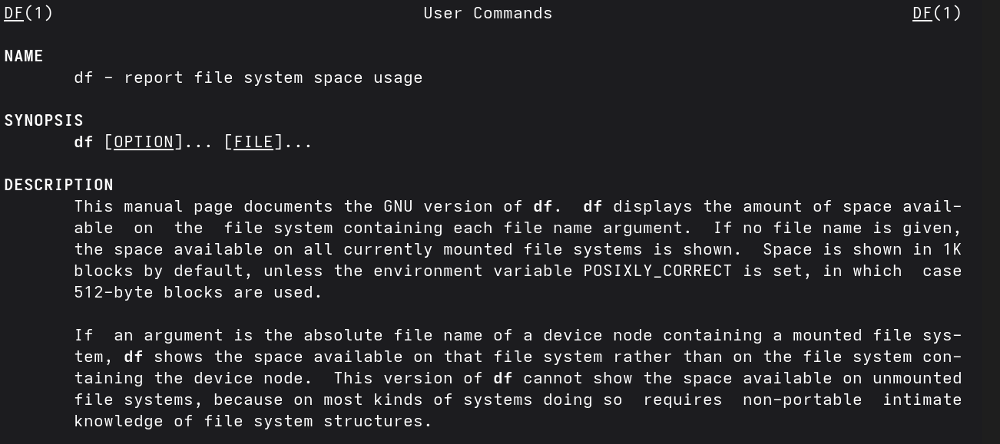
Рис. 15: справка команды df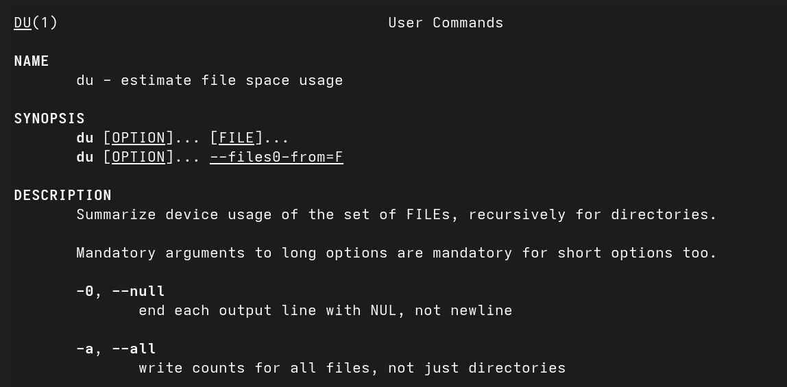
Рис. 16: справка команды duИспользуя df -vi я вывожу информацию об инодах и вижу сколько свободного места у моей системы:
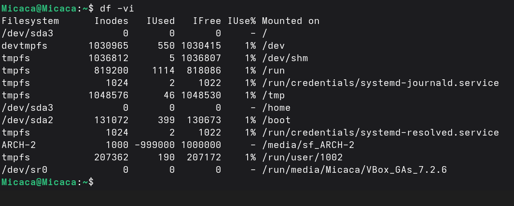
Рис. 17: df -viИспользуя du -a вижу сколько места занимают файлы в директории Загрузки:
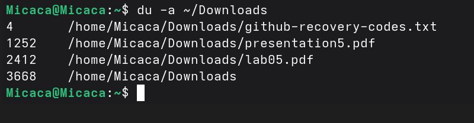
Рис. 18: du -aВоспользовавшись справкой команды find и аргумент d, вывожу всех директорий, имеющихся в домашнем каталоге:
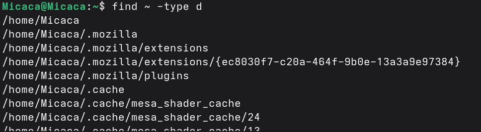
Рис. 19: Поиск директорий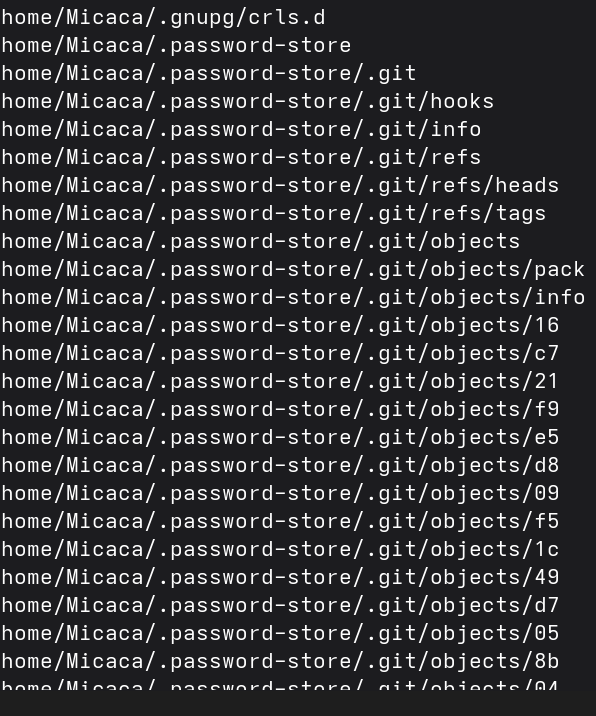
Рис. 20: результаты find ~ -type dПри выполнение данной работы я ознакомилась с инструментами поиска файлов и фильтрации текстовых данных. Также приобрела практические навыки по управлению процессами и по проверке использования диска по обслуживанию файловых систем.
stdin — стандартный поток ввода (по умолчанию: клавиатура), файловый дескриптор 0; stdout — стандартный поток вывода (по умолчанию: консоль), файловый дескриптор 1; stderr — стандартный поток вывод сообщений об ошибках (по умолчанию: консоль), файловый дескриптор 2
Конвейер (pipe) служит для объединения простых команд или утилит в цепочки, в которых результат работы предыдущей команды передаётся последующей.
Программа - это набор инструкций, который позволяет ЦПУ выполнять определенную задачу, в то время как процесс - это исполняемая программа.
PPID - (parent process ID) идентификатор родительского процесса. Процесс может порождать и другие процессы. UID, GID - реальные идентификаторы пользователя и его группы, запустившего данный процесс.
Запущенные фоном программы называются задачами (jobs). Ими можно управлять с помощью команды jobs, которая выводит список запущенных в данный момент задач.
Команда htop похожа на команду top по выполняемой функции: они обе показывают информацию о процессах в реальном времени, выводят данные о потреблении системных ресурсов и позволяют искать, останавливать и управлять процессами. У обеих команд есть свои преимущества. Например, в программе htop реализован очень удобный поиск по процессам, а также их фильтрация. В команде top это не так удобно — нужно знать кнопку для вывода функции поиска.
Команда find - это команда для поиска файлов и каталогов на основе специальных условий. Ее можно использовать в различных обстоятельствах, например, для поиска файлов по разрешениям, группам, типу, размеру и другим подобным критериям. Утилита find предустановлена по умолчанию во всех Linux дистрибутивах. Команда find имеет такой синтаксис: find [папка] [параметры] критерий шаблон [действие] Пример: find /etc -name “p*” -print
find / -type f -exec grep -H ‘текстДляПоиска’ {} ;
df -h.
du -s.
kill% номер задачи.